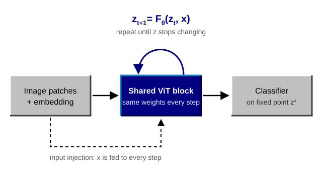
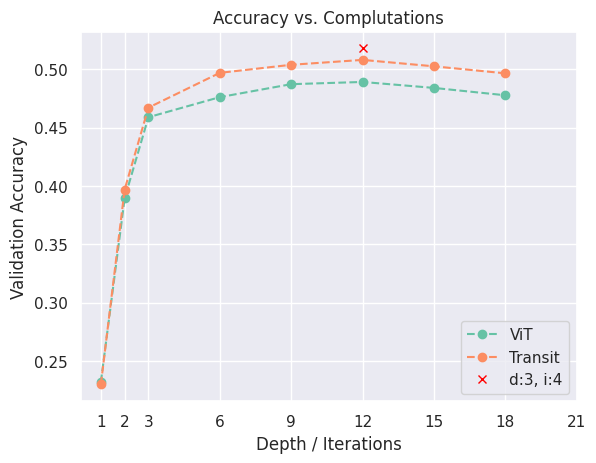
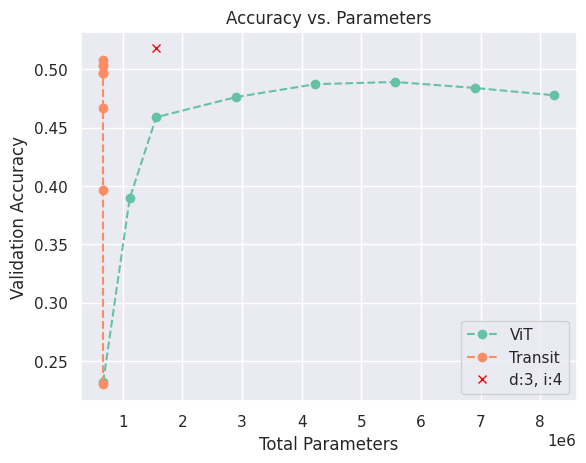

Recursive Vision Transformers
What if a Vision Transformer had just one block, applied over and over until its representation stops changing? I tried to turn a weight-tied ViT into a model that converges to a fixed point, so that its depth becomes something it computes rather than something we fix in advance.

The idea
A standard ViT stacks a dozen or so blocks, each with its own weights. A recursive ViT, like the Universal Transformer, reuses the same block at every step. This gives you as much depth as you like without adding parameters, and it raises a natural question: if we can run the block as many times as we want, can we run it until the answer stops changing?
The problem
Simply sharing weights is not enough. A recursive model trained for, say, 12 iterations works well at 12, but if you let it run longer, its internal state drifts and its predictions start to change. More computation does not automatically mean better answers, and the number of iterations quietly becomes another hyperparameter.
What we actually want is for the iteration to converge to a fixed point:
That is also the assumption behind Deep Equilibrium Models (DEQs). If a real equilibrium exists, you can find it with a root solver instead of naive unrolling, and train with implicit differentiation instead of storing every intermediate step, which can save a lot of memory. But all of this only holds if the model actually converges.
What I tried
On Tiny ImageNet (200 classes), I explored several ways to make the iteration stable:
- Input injection: feeding the image embedding into every step, so that the fixed point stays tied to the input.
- Normalizing the state: z-standardization and nGPT-inspired normalization to keep the representation from growing or collapsing.
- Stochastic depth: training with a varying number of iterations, so the model cannot overfit to a single depth.
- Trajectory loss: supervising the intermediate states and not just the last one, so that every step along the way is useful.
- Extra non-recurrent blocks: adding a regular ViT before or after the recursive core.
With these changes, the model finally reached a fixed point: instead of drifting, its state settled as the iterations went on.
A glimpse of the results
Here is one comparison between a regular ViT and my recursive model (called Transit in the plots). For the ViT, the x-axis is the number of blocks; for Transit, it is the number of times the single shared block is applied.


With the same amount of computation, Transit is as accurate as the ViT or slightly more so, peaking at about 51% at 12 iterations compared with 49% for a 12-block ViT. It does this with roughly 0.65M parameters, against more than 5M for the ViT. A variant that iterates 3 distinct blocks 4 times each (d:3, i:4) did best overall, at about 52% with around 1.5M parameters.
What comes next
- Replace plain iteration with proper fixed-point solvers in the forward pass, and implicit differentiation in the backward pass.
- Look inside: how do the attention maps evolve over iterations, and how do they compare to a regular ViT?
- Scale up beyond Tiny ImageNet, with careful accuracy, compute, and parameter comparisons.
- Explore Koopman-style dynamics. What if we could optimize directly for the 1000th step?